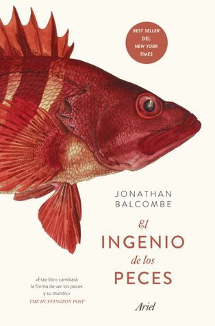

El ingenio de los peces
Reseña por Jorge I. Zuluaga

Ver reseña en GoodReads (necesita cuenta)
Este maravilloso libro está lleno de datos curiosos y sorpresas increíbles acerca de los más diversos, numerosos y lamentablemente sobre explotados vertebrados del planeta.
También y como lo hacen cada vez más documentos audiovisuales y escritos, manda un "sonoro" mensaje de advertencia para que seamos conscientes del peligro que corren los ecosistemas acuáticos debido a la sobre explotación de las especies que los conforman, en su mayoría, peces.
"Peces", un término simplista para agrupar a los millares de géneros y especies del que en realidad es la más diversa forma de animales que han existido en el planeta.
Estaban aquí cuando los mamíferos apenas si éramos un "proyecto de la evolución". Adquirieron sus cada vez más evidentes capacidades cognitivas y sociales mucho antes de que los primates asomáramos la cabeza en un mundo dominado por sus primos reptilianos.
El desconocimiento (o el desprecio) por los comportamientos complejos y las habilidades cognitivas y sociales de los peces, entre la mayoría de quiénes no somos expertos, tal vez se deba a que los vemos solamente como comida (es preferible comer algo si eres ignorante sobre el hecho de que sufrió antes de convertirse en alimento, de que tenía una vida interior, incluso una historia personal) o simples objetos decorativos.
Las evidencias compiladas aquí por Jonathan Belcombe son simplemente increíbles: peces que simulan orgasmos, peces que sienten empatía por otros peces, peces que engañan, peces que ayudan a otros peces, peces que sufren, peces que sienten apego por animales de otras especies, peces que usan herramientas, peces que ponen en riesgo su vida para defender a otros peces, incluyendo su descendencia, peces que juegan, peces que sueñan, etc.
El rango de comportamientos social y cognitivo parece tan amplio como su increíble diversidad.
Y todo lo logran sin una corteza cerebral, si extremidades, sin dedos, sin párpados, sin pulmones.
Es posible (solo posible) que después de leer este libro la pienses dos veces antes de comerte un pez frito en aceite. Por lo menos yo, no sé si podré hacerlo.
Lee "El ingenio de los peces", trata de no comer animales con mentes, vida interior, vida social y hasta sentimientos no muy diferentes de los tuyos.